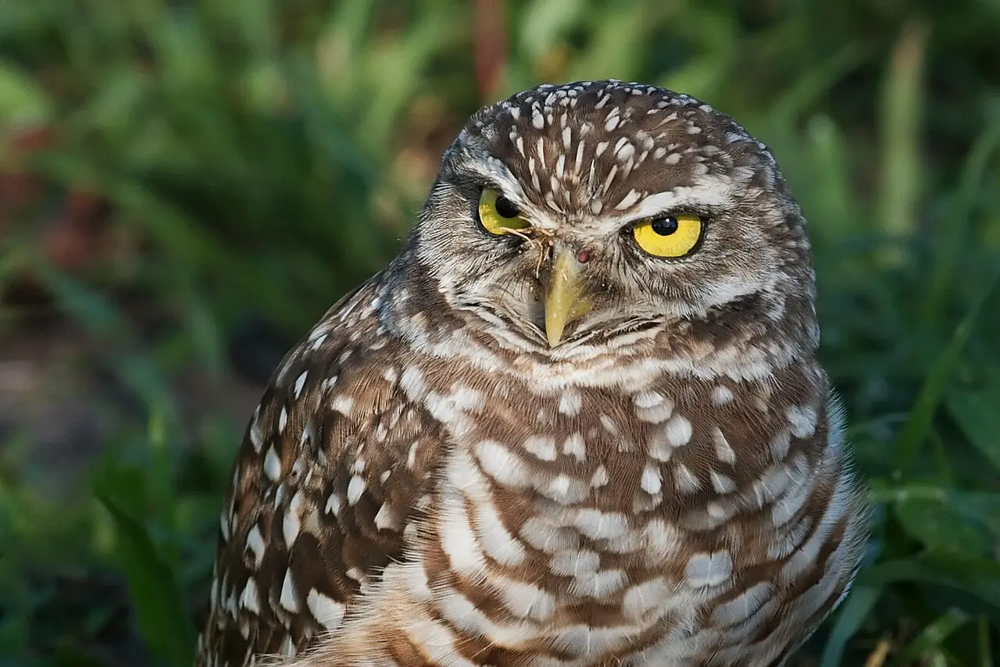
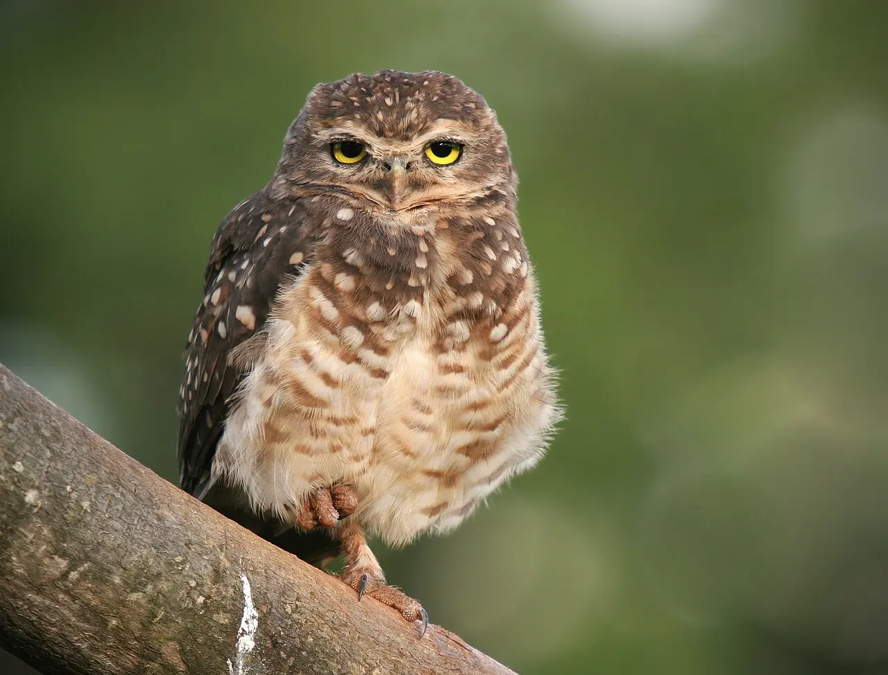
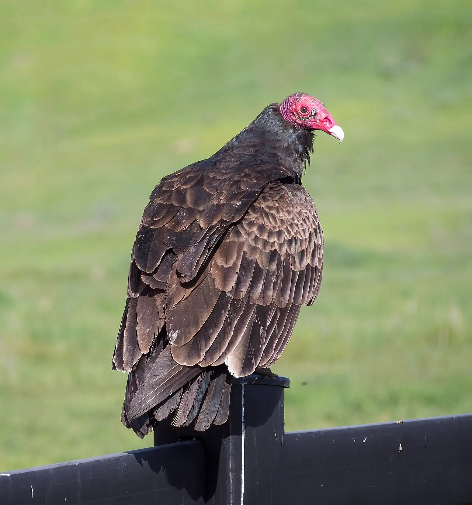

Módulo 2 Aula 9
Sentidos
A ave vive num mundo de cores, sons, cheiros e campos magnéticos que a gente só pode imaginar. Cada espécie enfatiza um sentido.
- Como a posição dos olhos muda o campo de visão
- Como a coruja localiza sons e o urubu acha comida pelo cheiro
- Que sentidos as aves usam para se orientar

Ave da aula
Coruja-buraqueira Athene cunicularia
Visão
A visão é o sentido principal da maioria das aves. A retina tem quatro tipos de células sensíveis à cor, os , contra três nos humanos, o que permite ver também o ultravioleta[1]. Não dá para mostrar como uma ave vê, porque o ultravioleta está fora do que nossos olhos detectam.
O que dá para mostrar é onde a ave olha. As corujas têm os olhos na frente da cabeça, com um campo de visão largo compartilhado pelos dois olhos[2]. Em algumas aves de água, os olhos ficam quase nos lados e o campo de visão se estende por quase todo o redor[3]. Compare os dois esquemas.
Olhos à frente
Os dois campos se sobrepõem bastante (região laranja). Ali a ave vê o mesmo ponto com os dois olhos, o que ajuda a avaliar distâncias. Em compensação, atrás da cabeça há uma grande região que a coruja não vê sem virar o pescoço.
Olhos nos lados
Cada olho vê um lado. Juntos cobrem quase todo o redor, e a sobreposição é pequena. É útil para quem precisa notar predadores vindo de qualquer direção.
Esquemas sem escala, para comparar a posição dos olhos. Os ângulos reais variam de espécie para espécie.
Audição
O rosto redondo de muitas corujas é um funil de penas, o . Estudos com a coruja-das-torres (Tyto alba) mostram que as penas do disco ajudam a localizar de onde vem o som[4]. Os ouvidos também são assimétricos, o que ajuda a perceber se o som vem de cima ou de baixo, além de direita ou esquerda[5].

Olfato
Durante muito tempo se achou que as aves quase não tinham olfato. Algumas têm, e muito. O urubu-de-cabeça-vermelha (Cathartes aura) usa o cheiro para achar carniça, inclusive em florestas onde a copa das árvores esconde o animal morto[6]. O bulbo olfatório dele, a parte do cérebro que processa cheiros, é quatro vezes maior que o do urubu-de-cabeça-preta, mesmo com o cérebro 20% menor[7]. Já o urubu-de-cabeça-preta (Coragyps atratus) depende mais da visão e costuma achar comida seguindo outros urubus[6].

Bússola
Aves migratórias cruzam continentes sem mapa. Para acertar a direção, usam o sol e as estrelas: na década de 1960 se descobriu que elas não decoram um mapa de estrelas, e sim percebem a rotação do céu para achar o norte e o sul[8]. Também usam o campo magnético da Terra: a existência de uma bússola magnética nas aves está bem documentada[9, 8]. Voltamos ao tema na aula 15, sobre migração.
Palavras novas
Teste rápido
Sem nota. Se errar, tente de novo.
Quantos tipos de cones as aves têm, em geral?
Qual urubu tem olfato muito desenvolvido e acha carniça pelo cheiro?
O que uma ave migratória usa para saber a direção?
Referências e leitura complementar
Onde conferir o que foi dito nesta aula. Os números entre colchetes no texto levam a estas fontes. Os links abrem em outra aba.
- Complementary shifts in photoreceptor spectral tuning unlock the full adaptive potential of ultraviolet vision in birdsPubMed Central (artigo científico) · inglêsAs quatro células de cor (cones) das aves e a visão de ultravioleta.
- Binocular field configuration in owls: the role of foraging ecologyPubMed Central (artigo científico) · inglêsOs olhos frontais das corujas e o campo de visão que os dois olhos compartilham.
- Avian visionCurrent Biology (ScienceDirect) · inglêsRevisão sobre a visão das aves: campo de visão, cores e adaptações.
- Improvements of Sound Localization Abilities by the Facial Ruff of the Barn Owl (Tyto alba) as Demonstrated by Virtual Ruff RemovalPubMed Central (artigo científico) · inglêsComo o disco facial da coruja ajuda a localizar sons.
- Combination of Interaural Level and Time Difference in Azimuthal Sound Localization in OwlsPubMed Central (artigo científico) · inglês · leitura complementarComo a assimetria dos ouvidos ajuda a localizar sons na vertical e na horizontal.
- Do vultures find dead animals by smell or by tracking predators or scavengers on the ground?All About Birds · Cornell Lab of Ornithology · inglêsO olfato do urubu-de-cabeça-vermelha e como ele acha carniça.
- Anatomical evidence for scent guided foraging in the turkey vultureScientific Reports (Nature) · inglês · leitura complementarEstudo com o cérebro do urubu-de-cabeça-vermelha e seu bulbo olfatório grande.
- Navigation: How Birds Find Their Way When They MigrateAll About Birds · Cornell Lab of Ornithology · inglêsSol, estrelas e campo magnético na orientação das aves migratórias.
- Calibration of the magnetic compass of a migratory bird by celestial rotationNature · inglês · leitura complementarEstudo científico sobre a bússola magnética de uma ave migratória.
Os endereços foram abertos e conferidos em 29/09/2026. Alguns sites de revistas científicas e de órgãos oficiais exigem verificação humana e não puderam ser testados por robô. Sites externos podem mudar ou sair do ar.
Para levar
Em três frases
- A maioria das aves enxerga em quatro cores, incluindo o ultravioleta, e a posição dos olhos define o que elas veem.
- A coruja localiza sons com o disco facial e com ouvidos assimétricos, e o urubu-de-cabeça-vermelha acha carniça pelo cheiro.
- Aves migratórias se orientam pelo sol, pelas estrelas e pelo campo magnético da Terra.